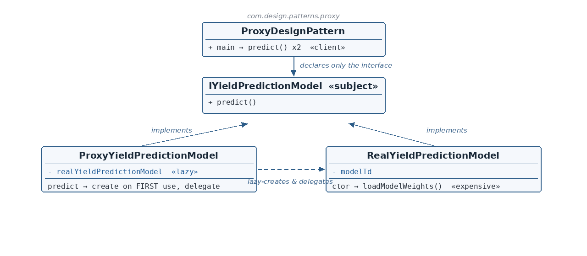

IYieldPredictionModel.java — the Subject
☕ 4 min read · 🎬 Video walkthrough · 📊 UML diagram · 💻 Runnable code
⚡ In a nutshell — Provide a surrogate for another object that controls access to it — here, a virtual proxy that delays an expensive construction until first use.
Provide a surrogate for another object that controls access to it — here, a virtual proxy that delays an expensive construction until first use. The proxy implements the same interface as the real subject, so clients can't tell them apart.
A machine-learning yield-prediction model is expensive to prepare: its weights must be loaded into memory. Many runs never call predict() at all — loading eagerly wastes memory and startup time. The virtual proxy stands in for the model: the weights load only on the first predict(), and every later call reuses the loaded model.
IYieldPredictionModel is the Subject: predict().RealYieldPredictionModel is the Real Subject: its constructor calls loadModelWeights() — the expensive step, deliberately visible via a log line.ProxyYieldPredictionModel is the Proxy: same interface, holds the model id (cheap) and a null real-model field. predict() lazily constructs the real model on first call, then delegates — every later call skips straight to delegation.predict() twice; the loading log appears once.
Reading the diagram: proxy and real subject implement the same interface; the client declares only that interface. The dashed arrow is the lazy creation + delegation that happens inside the proxy.
IYieldPredictionModel — Subject — the shared predict() contract.RealYieldPredictionModel — Real subject — loads weights in its constructor (expensive).ProxyYieldPredictionModel — Virtual proxy — defers that construction to first use.ProxyDesignPattern — Client — two predict() calls; loading happens once.public interface IYieldPredictionModel {
void predict();
}
RealYieldPredictionModel.java — the Real Subjectpublic class RealYieldPredictionModel implements IYieldPredictionModel {
private final String modelId;
public RealYieldPredictionModel(String modelId) {
this.modelId = modelId;
loadModelWeights();
}
private void loadModelWeights() {
System.out.println("-----Loading model weights into memory: " + modelId);
}
@Override
public void predict() {
System.out.println("-----Running yield prediction with model: " + modelId);
}
}
loadModelWeights() runs the moment the object exists. That's exactly why constructing it eagerly is wasteful, and why the demo logs it: you can see when the cost is paid.ProxyYieldPredictionModel.java — the Proxypublic class ProxyYieldPredictionModel implements IYieldPredictionModel {
private final String modelId;
private RealYieldPredictionModel realYieldPredictionModel;
public ProxyYieldPredictionModel(String modelId) {
this.modelId = modelId;
}
@Override
public void predict() {
System.out.println("----Routing through model proxy");
if (realYieldPredictionModel == null) {
realYieldPredictionModel = new RealYieldPredictionModel(modelId);
}
realYieldPredictionModel.predict();
}
}
modelId — creating a proxy costs nothing.null check is the virtual-proxy core: first predict() constructs the real model (paying the loading cost now, when it's actually needed); every later call finds the field non-null and goes straight to delegation.ProxyDesignPattern.java — the clientIYieldPredictionModel model = new ProxyYieldPredictionModel("corn-yield-forecaster-v3");
model.predict();
model.predict();
predict() and not the proxy's constructor? That would just move the eager cost. The whole point is paying it at first use.Proxy Design Pattern
----Routing through model proxy
-----Loading model weights into memory: corn-yield-forecaster-v3
-----Running yield prediction with model: corn-yield-forecaster-v3
----Routing through model proxy
-----Running yield prediction with model: corn-yield-forecaster-v3
@Cacheable/security AOP proxies.Same interface, controlled access — the expensive part waits until it's truly needed.
👏 Found this useful? Give it a few claps so more developers discover it, and follow for the whole series — every article ships with a UML diagram, runnable code, a narrated video, and a companion PDF. Happy building! 🚀